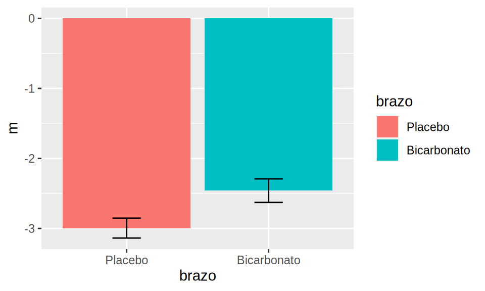
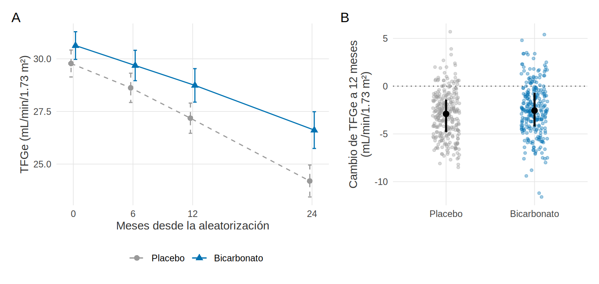
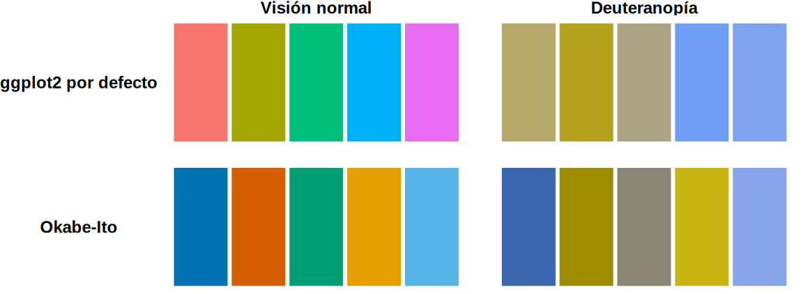

library(tidyverse)
library(patchwork)
source("R/funciones_extra_a.R") # num(), pct()
source("R/tabla1.R") # tabla1()
source("R/funciones_cap23.R") # theme_libro(), ft_libro(), guardar_fig()
theme_set(theme_libro())
eca <- read_csv("Bases/eca_bicarbonato.csv", show_col_types = FALSE) |> # ensayo SIMULADO (Cap. 11)
mutate(brazo = factor(brazo, levels = c("Placebo", "Bicarbonato")), cambio12 = tfg_12 - tfg0)Tablas y figuras publicables
Nota🩺 Escenario
El editor devuelve tu manuscrito con tres comentarios: «La Tabla 1 incluye valores p; en un ensayo aleatorizado no corresponden», «La Figura 2 no se distingue en la versión impresa en blanco y negro» y «Las figuras tienen baja resolución». Ninguno es un error de análisis: son errores de presentación, y se evitan con unas pocas reglas y un tema de figuras que reutilizas siempre. Este subcapítulo te muestra el camino «feo → bueno» con el ensayo simulado de bicarbonato, y cómo llevar el resultado a Word.
Lo que vamos a hacer
- Repasar las reglas que más piden los editores para tablas y figuras.
- Convertir una Tabla 1 «fea» en una publicable con
flextable, y llevarla a Word. - Convertir una figura «fea» en una figura compuesta con
patchwork, paleta apta para daltonismo y pie completo, y exportarla con el tamaño y la resolución correctos.
Paso 1: las reglas
Para las tablas
- Tabla 1 de un ECA: sin valores p. Si la aleatorización se hizo bien, las diferencias basales son producto del azar; contrastar una hipótesis que ya sabes cierta no informa (lo dicen las guías CONSORT). Describe el balance con medidas de tamaño, como la diferencia estandarizada de medias (DEM, 7.2).
- Tabla 1 de un estudio observacional: tampoco necesitas el p; quien importa es la DEM, porque el p depende del tamaño de muestra (7.2).
- Tabla 2 y su falacia: presenta el efecto de la exposición y no interpretes como efectos causales los coeficientes de las demás covariables del mismo modelo (8.6).
- Pon el n por grupo en el encabezado, las unidades en cada fila, decimales coherentes (los que tenga sentido clínico) y un pie que defina las abreviaturas y diga qué prueba o modelo se usó.
Para las figuras
- Muestra los datos (o su distribución), no solo medias en barras con «bigotes».
- Ejes con unidades, escalas honestas y el mismo eje en paneles comparables.
- Nunca solo color: usa también forma o tipo de línea, y una paleta distinguible por personas con daltonismo.
- Texto legible al tamaño final de la figura (no al de tu pantalla) y un pie de figura completo.
Paso 2: una Tabla 1 «fea» y una «buena»
Primero la tabla tal como sale si aceptas todo lo que ofrece la función: tres decimales, valores p, columna de faltantes y total.
vars <- c("edad", "sexo", "dm", "tfg0", "bic0", "uacr", "pas")
fea <- tabla1(eca, vars, grupo = "brazo", no_normales = "uacr", binarias = "dm", digitos = 3)
fea |> select(Variable, Bicarbonato, Placebo, Faltantes, p) |> knitr::kable()| Variable | Bicarbonato | Placebo | Faltantes | p |
|---|---|---|---|---|
| n | 316 | 324 | ||
| edad, media (DE) | 64.044 (11.083) | 64.639 (10.711) | 0 | 0.491 |
| sexo, n (%) | 0 | 0.560 | ||
| Hombre | 184 (58.228%) | 196 (60.494%) | ||
| Mujer | 132 (41.772%) | 128 (39.506%) | ||
| dm, n (%) | 126 (39.873%) | 138 (42.593%) | 0 | 0.485 |
| tfg0, media (DE) | 30.630 (5.936) | 29.778 (5.850) | 0 | 0.068 |
| bic0, media (DE) | 19.939 (1.732) | 19.999 (1.765) | 0 | 0.662 |
| uacr, mediana [Q1, Q3] | 195.000 [78.750, 399.750] | 184.500 [81.750, 391.250] | 0 | 0.771 |
| pas, media (DE) | 136.405 (14.647) | 136.602 (15.315) | 0 | 0.868 |
Qué vemos. Variables con nombres internos (tfg0, bic0), sin unidades, con tres decimales que no significan nada clínicamente (64.044 (11.083)) y una columna de valores p. El menor es 0.068 (TFGe basal): no llega a 0.05, pero ese no es el punto. Con 7 variables, a veces alguna saldría «significativa» solo por azar, y un lector podría creer que la aleatorización falló. La tabla no debería dar pie a esa lectura.
Ahora la versión publicable: etiquetas con unidades, un decimal, el n en el encabezado, sin valores p ni columna de faltantes (aquí no hay datos basales faltantes, y eso va en el pie), y la DEM como medida de balance.
etq <- c(edad = "Edad, años", sexo = "Sexo", dm = "Diabetes", tfg0 = "TFGe basal, mL/min/1.73 m²",
bic0 = "Bicarbonato sérico basal, mmol/L", uacr = "UACR, mg/g", pas = "PAS, mmHg")
t1 <- tabla1(eca, vars, grupo = "brazo", no_normales = "uacr", binarias = "dm", etiquetas = etq,
digitos = 1, valor_p = FALSE, faltantes = FALSE) |>
select(-Total) |>
filter(Variable != "n") |>
mutate(Variable = if_else(Variable %in% c("Hombre", "Mujer", "No", "Sí"), paste0(" ", Variable), Variable))
n_brazo <- table(eca$brazo)
names(t1)[names(t1) %in% c("Placebo", "Bicarbonato")] <-
paste0(c("Placebo", "Bicarbonato"), " (n = ", n_brazo[c("Placebo", "Bicarbonato")], ")")
t1 <- relocate(t1, starts_with("Placebo"), .before = starts_with("Bicarbonato")) # el control primero
sin_faltantes <- all(colSums(is.na(eca[, vars])) == 0)
sin_faltantes[1] TRUEft_libro(t1,
titulo = "Tabla 1. Características basales según el grupo asignado (ensayo simulado)",
pie = c("Media (DE) o mediana [Q1, Q3] para la UACR; n (%) para las categorías. DEM: diferencia estandarizada de medias.",
"TFGe: tasa de filtración glomerular estimada; UACR: cociente albúmina/creatinina urinario; PAS: presión arterial sistólica.",
"No hay datos faltantes en las variables basales. No se calculan valores p: la asignación fue aleatoria. Datos simulados."))Variable | Placebo (n = 324) | Bicarbonato (n = 316) | DEM |
|---|---|---|---|
Edad, años, media (DE) | 64.6 (10.7) | 64.0 (11.1) | -0.05 |
Sexo, n (%) | |||
Hombre | 196 (60.5%) | 184 (58.2%) | -0.05 |
Mujer | 128 (39.5%) | 132 (41.8%) | 0.05 |
Diabetes, n (%) | 138 (42.6%) | 126 (39.9%) | -0.06 |
TFGe basal, mL/min/1.73 m², media (DE) | 29.8 (5.9) | 30.6 (5.9) | 0.14 |
Bicarbonato sérico basal, mmol/L, media (DE) | 20.0 (1.8) | 19.9 (1.7) | -0.03 |
UACR, mg/g, mediana [Q1, Q3] | 184.5 [81.8, 391.2] | 195.0 [78.8, 399.8] | 0.03 |
PAS, mmHg, media (DE) | 136.6 (15.3) | 136.4 (14.6) | -0.01 |
Media (DE) o mediana [Q1, Q3] para la UACR; n (%) para las categorías. DEM: diferencia estandarizada de medias. | |||
TFGe: tasa de filtración glomerular estimada; UACR: cociente albúmina/creatinina urinario; PAS: presión arterial sistólica. | |||
No hay datos faltantes en las variables basales. No se calculan valores p: la asignación fue aleatoria. Datos simulados. | |||
Qué vemos. La tabla dice quién es cada grupo con las unidades en la propia fila, con 324 y 316 pacientes en los encabezados. Las DEM se mueven entre 0.01 y 0.14, todas por debajo de 0.2 en valor absoluto, que es el límite que se usa por costumbre para hablar de balance. Y el pie permite entender la tabla sin leer el texto.
Con knitr::kable() la tabla también se puede cuidar (digits =, caption =, align =), y es lo más práctico en un documento HTML. Con flextable ganas control fino y la exportación a Word, que es lo que piden casi todas las revistas.
Con el paquete gtsummary (código no verificado en el entorno de pruebas del libro), la misma tabla sin valores p es:
library(gtsummary)
eca |>
select(brazo, edad, sexo, dm, tfg0, bic0, uacr, pas) |>
tbl_summary(by = brazo,
statistic = list(all_continuous() ~ "{mean} ({sd})", uacr ~ "{median} [{p25}, {p75}]"),
digits = all_continuous() ~ 1) |> # sin add_p(): es un ECA
modify_spanning_header(all_stat_cols() ~ "**Grupo asignado**") |>
as_flex_table() |>
flextable::save_as_docx(path = file.path(tempdir(), "tabla1_gtsummary.docx"))De la tabla a Word
flextable::save_as_docx() escribe un archivo .docx con la tabla editable. Aquí lo guardamos en una carpeta temporal para no ensuciar el proyecto; en tu estudio lo guardarías en resultados/.
ruta_docx <- file.path(tempdir(), "tabla1.docx")
flextable::save_as_docx(ft_libro(t1, titulo = "Tabla 1"), path = ruta_docx)
c(existe = file.exists(ruta_docx), kb = round(file.size(ruta_docx) / 1024))existe kb
1 14 Qué vemos. El archivo existe (14 KB). Como la tabla sale de código, si mañana cambian los datos se regenera y no hay que rehacerla a mano, que es donde se cuelan los errores de copiar y pegar.
Paso 3: una figura «fea» y una «buena»
La pregunta del ensayo: ¿cambia la TFGe con el bicarbonato? La primera figura que sale de prisa es un gráfico de barras con «bigotes» y los colores por defecto:
eca |>
group_by(brazo) |>
summarise(m = mean(cambio12, na.rm = TRUE), se = sd(cambio12, na.rm = TRUE) / sqrt(sum(!is.na(cambio12)))) |>
ggplot(aes(brazo, m, fill = brazo)) +
geom_col() + geom_errorbar(aes(ymin = m - se, ymax = m + se), width = 0.2) +
theme_gray()
Qué vemos. Los problemas: el eje no tiene nombre ni unidades; las barras ocultan que todos los cambios son negativos (la TFGe cae en ambos grupos); no se ve la dispersión; el fondo gris y los colores de ggplot por defecto compiten con los datos, y la leyenda repite lo que ya dice el eje. Y en blanco y negro los dos grupos se confunden.
La versión buena tiene dos paneles: A la trayectoria de la TFGe (media con IC 95 %) y B la distribución individual del cambio a 12 meses. Primero preparamos los datos de cada panel:
visitas <- c(tfg0 = 0, tfg_6 = 6, tfg_12 = 12, tfg_24 = 24)
trayectoria <- eca |>
pivot_longer(all_of(names(visitas)), names_to = "visita", values_to = "tfg", values_drop_na = TRUE) |>
group_by(brazo, mes = visitas[visita]) |>
summarise(n = n(), media = mean(tfg), ic = qt(0.975, n - 1) * sd(tfg) / sqrt(n), .groups = "drop")
n_visita <- trayectoria |> filter(mes == 24) |> pull(n, name = brazo)
n_visita Placebo Bicarbonato
269 241 col <- c(Placebo = unname(paleta_libro["gris"]), Bicarbonato = unname(paleta_libro["azul"]))
forma <- c(Placebo = 16, Bicarbonato = 17)
pa <- ggplot(trayectoria, aes(mes, media, color = brazo, shape = brazo, linetype = brazo)) +
geom_errorbar(aes(ymin = media - ic, ymax = media + ic), width = 0.7, position = position_dodge(0.9)) +
geom_line(position = position_dodge(0.9)) + geom_point(size = 2.2, position = position_dodge(0.9)) +
scale_x_continuous(breaks = unname(visitas)) +
scale_color_manual(values = col) + scale_shape_manual(values = forma) + scale_linetype_manual(values = c(2, 1)) +
labs(x = "Meses desde la aleatorización", y = "TFGe (mL/min/1.73 m²)")
pb <- ggplot(filter(eca, !is.na(cambio12)), aes(brazo, cambio12, color = brazo)) +
geom_hline(yintercept = 0, linetype = "dotted", color = "grey40") +
geom_jitter(width = 0.15, alpha = 0.35, size = 1) +
stat_summary(fun.data = median_hilow, fun.args = list(conf.int = 0.5), color = "black", linewidth = 0.9, size = 0.4) +
scale_color_manual(values = col, guide = "none") +
labs(x = NULL, y = "Cambio de TFGe a 12 meses\n(mL/min/1.73 m²)")
(pa | pb) + plot_layout(widths = c(1.4, 1), guides = "keep") + plot_annotation(tag_levels = "A")
Qué vemos. El panel A muestra que la TFGe baja en ambos grupos y que el grupo con bicarbonato cae menos (26.6 frente a 24.2 mL/min/1.73 m² a 24 meses). El panel B enseña lo que las barras ocultaban: la dispersión individual es grande y los dos grupos se solapan mucho. Los grupos se distinguen por color, por forma del punto y por tipo de línea, así que la figura sobrevive a la impresión en blanco y negro. Ten en cuenta que las medias de cada visita usan solo a quienes tuvieron la medición (a 24 meses, 241 y 269 pacientes), y eso va en el pie.
Paleta apta para daltonismo
La paleta de Okabe-Ito (paleta_libro) se eligió para que sus colores se distingan en las formas habituales de daltonismo. Se puede comprobar simulando la visión con el paquete colorspace:
cols_defecto <- scales::hue_pal()(5)
cols_oi <- unname(paleta_libro[1:5])
vistas <- c("Visión normal", "Deuteranopía")
paletas <- bind_rows(
tibble(paleta = "ggplot2 por defecto", vista = vistas[1], color = cols_defecto),
tibble(paleta = "ggplot2 por defecto", vista = vistas[2], color = colorspace::deutan(cols_defecto)),
tibble(paleta = "Okabe-Ito", vista = vistas[1], color = cols_oi),
tibble(paleta = "Okabe-Ito", vista = vistas[2], color = colorspace::deutan(cols_oi))) |>
mutate(vista = factor(vista, levels = vistas)) |>
group_by(paleta, vista) |> mutate(pos = row_number()) |> ungroup()
ggplot(paletas, aes(pos, 1, fill = color)) + geom_tile(color = "white", linewidth = 1) +
scale_fill_identity() + facet_grid(paleta ~ vista, switch = "y") + theme_void() +
theme(strip.text = element_text(face = "bold", size = 9), strip.text.y.left = element_text(angle = 0))
Para ponerle un número a lo que se ve, medimos la distancia mínima entre dos colores cualesquiera de cada paleta en el espacio de color CIELAB (cuanto mayor, más fáciles de distinguir):
dist_min <- function(cols) min(dist(as(colorspace::hex2RGB(cols), "LAB")@coords))
distancias <- tibble(paleta = c("ggplot2 por defecto", "Okabe-Ito"),
vision_normal = c(dist_min(cols_defecto), dist_min(cols_oi)),
deuteranopia = c(dist_min(colorspace::deutan(cols_defecto)), dist_min(colorspace::deutan(cols_oi))),
deuteranopia_3_colores = c(dist_min(colorspace::deutan(cols_defecto[1:3])), # los tres primeros colores
dist_min(colorspace::deutan(cols_oi[1:3]))))
distancias |> mutate(across(where(is.numeric), \(x) round(x, 1)))# A tibble: 2 × 4
paleta vision_normal deuteranopia deuteranopia_3_colores
<chr> <dbl> <dbl> <dbl>
1 ggplot2 por defecto 60.6 7.4 15.8
2 Okabe-Ito 26.4 18.4 53.5Qué vemos. Con visión normal, los cinco colores por defecto de ggplot2 están más separados (60.6 frente a 26.4). Pero al simular deuteranopía la paleta por defecto se colapsa (7.4: tres de sus cinco colores se vuelven casi el mismo tono), mientras que Okabe-Ito conserva más separación (18.4). No es magia: con cinco categorías ninguna paleta es perfecta, y por eso no dependas solo del color (forma, tipo de línea, etiquetas directas). Con tres categorías la diferencia es mayor: 15.8 frente a 53.5.
Paso 4: tamaño, resolución y formato
Una figura se exporta al tamaño final en que se imprimirá (en cm), con una resolución adecuada y, si es posible, en formato vectorial. guardar_fig() envuelve ggsave() y devuelve lo que escribió (en una carpeta temporal en este ejemplo):
fig <- (pa | pb) + plot_layout(widths = c(1.4, 1)) + plot_annotation(tag_levels = "A")
guardar_fig(fig, "figura2", ancho_cm = 17, alto_cm = 8, dpi = 300)# A tibble: 2 × 3
archivo kb pixeles
<chr> <dbl> <chr>
1 figura2.png 184 2007 x 944
2 figura2.pdf 37 vectorial Qué vemos. A 17 cm de ancho y 300 ppp, el PNG mide 2007 x 944 píxeles; el PDF es vectorial y no pierde nitidez al ampliar. Los requisitos cambian entre revistas (ancho de columna, resolución, formato): revisa las instrucciones para autores antes de decidir. Una buena práctica es fijar dpi, ancho y alto en la función y no en la prisa del último día.
Paso 5: el pie de figura completo
Un buen pie permite entender la figura sin leer el texto. Incluye (1) qué se muestra, (2) quiénes (población, n), (3) cómo se resumió (media, IC, mediana), (4) abreviaturas, (5) fuente de datos y (6) si son simulados. El de la figura compuesta, en el orden anterior:
Figura 2. Evolución de la TFGe en 640 pacientes del ensayo simulado (316 con bicarbonato, 324 con placebo). A: media e IC 95 % en cada visita, entre quienes tuvieron la medición. B: cambio individual a 12 meses (barra: mediana y rango intercuartílico). TFGe: tasa de filtración glomerular estimada. Datos simulados.
Trampas frecuentes
Advertencia⚠️ Lo que más se repite en los comentarios de los editores
- Valores p en la Tabla 1 de un ECA, o el «efecto» de cada covariable en la Tabla 2 (8.6).
- Barras con «bigotes» para una variable continua: oculta la distribución. Usa puntos, cajas o violines.
- Color como única señal, y paletas arcoíris.
- Figuras guardadas desde la ventana de RStudio, a un tamaño que nadie decidió: usa
ggsave()con medidas explícitas. - Tablas pegadas como imagen: no se pueden editar ni leer con un lector de pantalla. Entrégalas como tabla de Word.
Importante🎯 En resumen
- Reglas de oro: sin valores p en la Tabla 1 de un ECA (usa DEM), efecto de la exposición en la Tabla 2 sin interpretar las covariables, n y unidades visibles, pie completo.
ft_libro()(conflextable) yflextable::save_as_docx()llevan la tabla a Word sin copiar y pegar.gtsummaryhace lo mismo si lo tienes instalado.theme_libro()ypaleta_librodan un estilo único y apto para daltonismo;patchworkcompone los paneles (pa | pb) con etiquetas A y B.- Exporta con
guardar_fig()(cm,dpi, PNG y PDF): aquí, 2007 x 944 píxeles. - La figura buena muestra los datos: en el panel B se ve el solapamiento que las barras ocultaban.
Ejercicio
- Genera la Tabla 1 del ensayo con
kable()y conft_libro()y compáralas. ¿Cuál preferirías para un manuscrito y cuál para un informe HTML? - Modifica
fig-compuesta-c232para que el panel B muestre la TFGe a 24 meses. ¿Cambia la imagen del solapamiento entre grupos? ¿Qué cambia en el pie? - Calcula las DEM de la Tabla 1 con
smd()(deR/funciones_epi.R) y comprueba que coinciden con las de la tabla.
Referencias
- Schulz KF, Altman DG, Moher D. CONSORT 2010 Statement. BMJ. 2010;340:c332 (sobre contrastes de hipótesis en la Tabla 1 de un ensayo).
- Westreich D, Greenland S. The Table 2 fallacy. Am J Epidemiol. 2013;177:292-298.
- Okabe M, Ito K. Color Universal Design (CUD): how to make figures and presentations that are friendly to colorblind people (2002), origen de la paleta de Okabe-Ito.